Best Attractions
Hey there! I'm going out on a limb and guessing you came from our information page about visiting London... and, let me guess... they told you to come here first!
Starting with the most famous attractions, we have the London Eye, Buckingham Palace, the Tower of London, and the British Museum. If you are more of a tourist-y person, these places are all great to visit when you want to learn about history and take in unforgettable views.
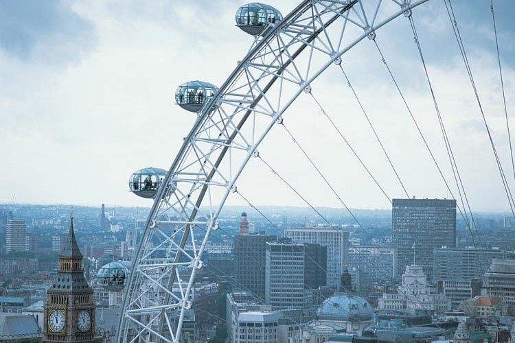
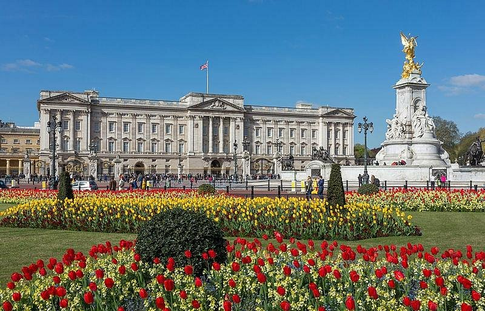
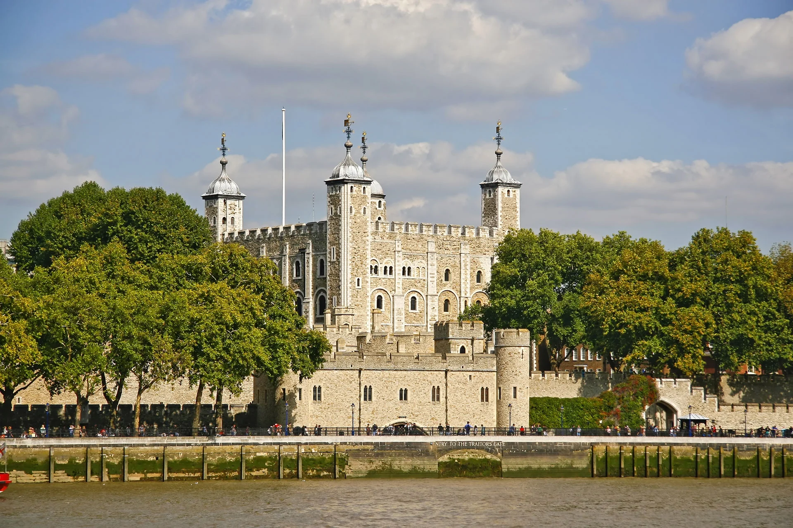
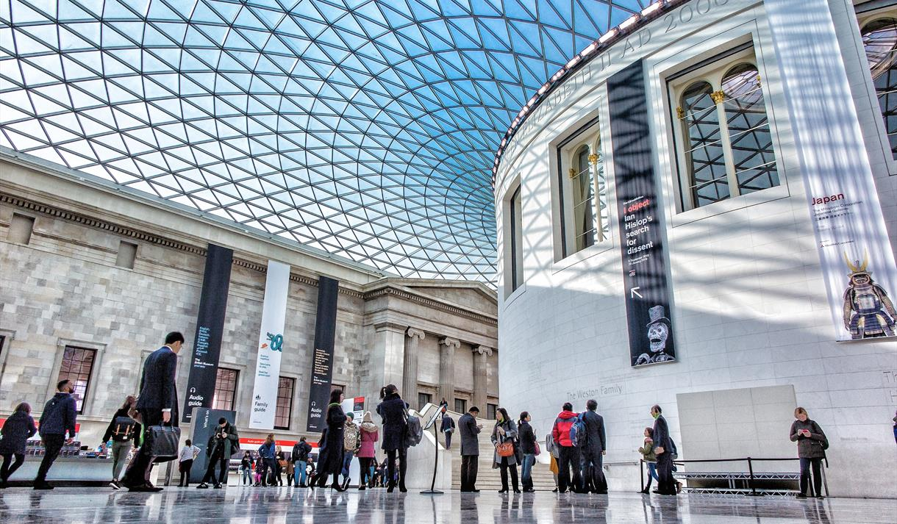
If you are more of a traveller and are looking for undiscovered gems or places with less tourists, we recommend visiting the Natural History Museum, St. Pauls Cathedral, Hampstead Heath, and Chalcot Square. These places tend to be on the lesser side of tourists and stay quieter as you explore their secrets.
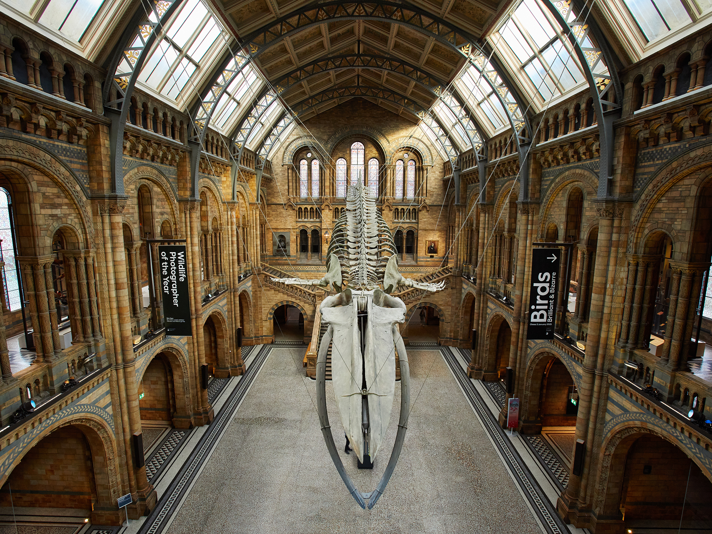
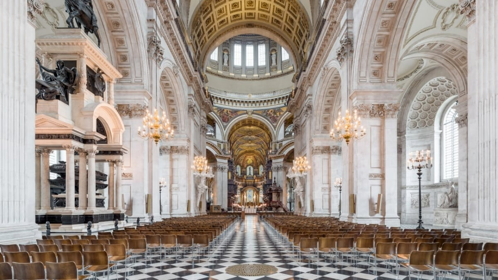
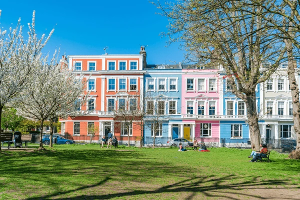
*Once you've viewed the attractions, head back to the "Visit" page for more information*
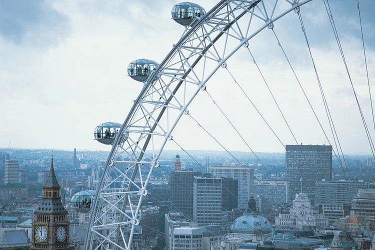
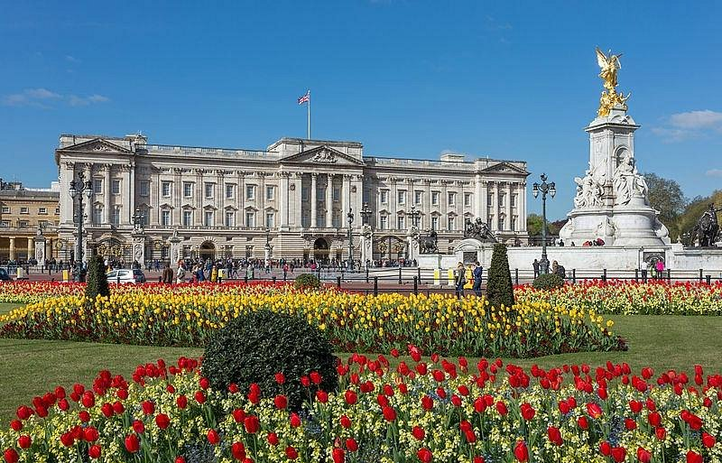
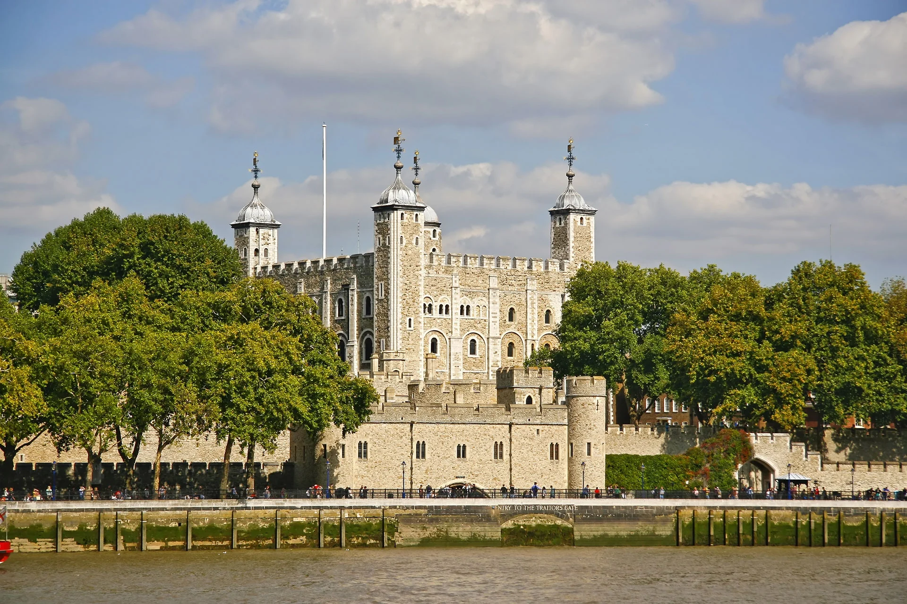
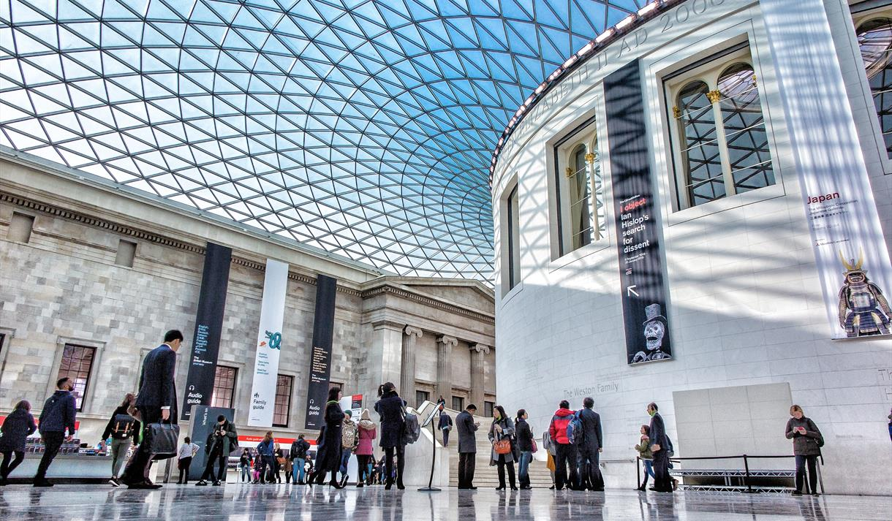
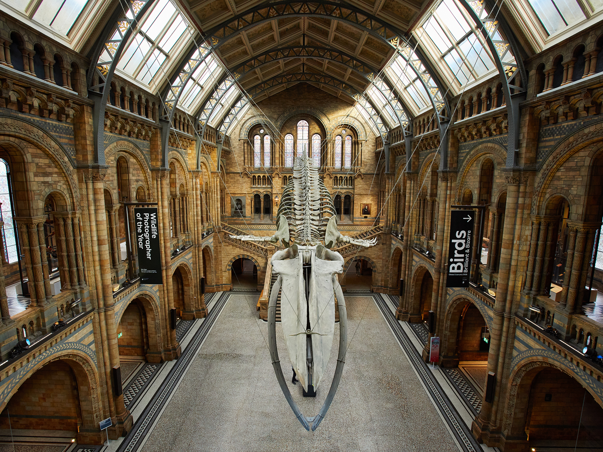
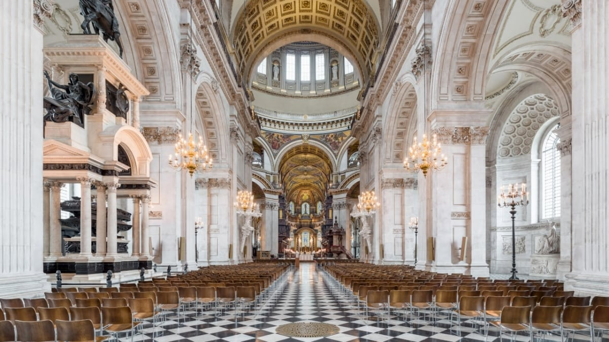
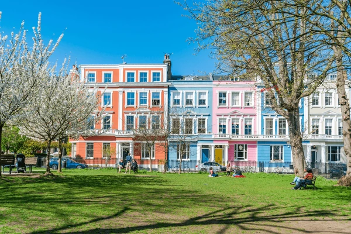